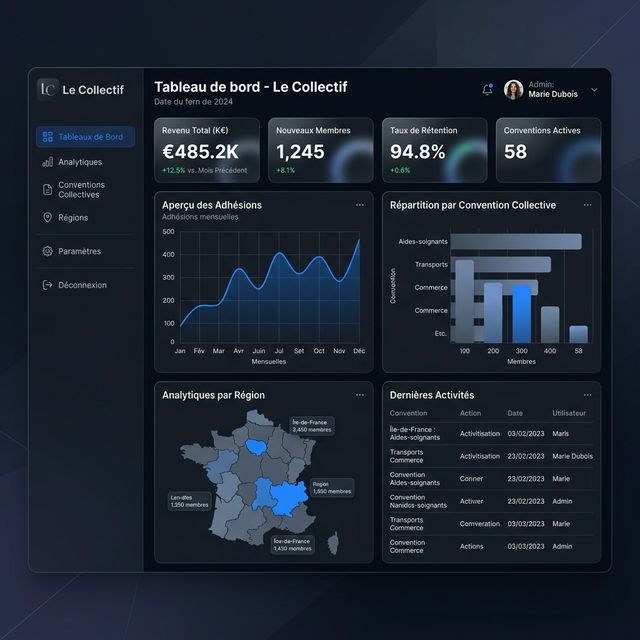

Croisez 2.9M entreprises du Québec avec 8 400+ conventions collectives. Analysez, comparez et interrogez vos données en temps réel.

Visualisation avancée des données syndicales
Le premier outil qui croise les données légales et syndicales du Québec.
Recherche plein-texte instantanée dans plus de 8 400 conventions collectives. Trouvez n'importe quelle clause en une fraction de seconde.
Comparez les conditions de travail et les grilles salariales par secteur, région et centrale syndicale pour rester compétitif.
Visualisez 263 000 établissements géocodés. Identifiez les zones de forte activité syndicale et les opportunités territoriales.
Grâce à notre système RAG intelligent, vous n'avez plus besoin de parcourir manuellement des milliers de pages. Posez vos questions et l'IA extrait les réponses avec des citations précises directement depuis les conventions collectives.
👤 Utilisateur
Quelle est la prime de soir pour un technicien dans la convention Metro (CSN) ?
🤖 Assistant IA
Selon l'Article 14.3 (p. 22), la prime de soir est de 1,25 $/h pour toutes les classifications techniques.
Source: Convention_Metro_CSN_2024.pdf
Rejoignez les leaders qui utilisent déjà Le Collectif pour anticiper les tendances syndicales du Québec.